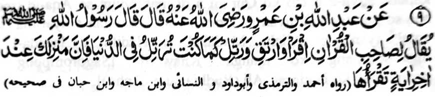
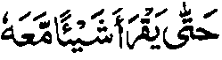
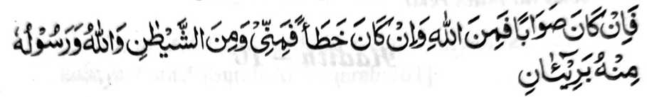
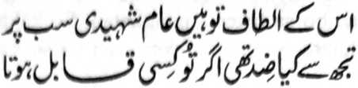

Hadith — 9

Miyakathitayan ko Abdullah bin Omar (Radkiallako Anhoma) a pitharo iyan a pitharo o Rasulollah (Sallalloho 'Alaihi Wasallam), “Petharo-on ko bolayoka o Quran (ko Alongan a Qiyamat) a batiya ka na phagisegen ka den so pangkatan ka (ko Sorga), go batiya ka sa lagid den o kapembatiya-a ka si-i ko masa ngka sa Donya. Na mata-an! A aya khadarepa-an ka na si-i ko taman a kaposan reka a Ayaat a miyabatiya a ka.”
So “bolayoka o Qur’an” na aya ma-ana niyan na so Hafiz. So Mulla ‘Ali Qari (Rahinatullahi ‘Alaihi) na inosay niyan sa malendo a giyangka-iya bantogan na isesenggay ko Hafiz, a giyangkai mambo a hafiz na kena ba so tao a giyabo a kapephangadi iyan a phagilay niyan so Soti a Kitab. Paganay ron, na sabap sa so katharo a ‘Bolayoka o Qur’an’ na aya mitotoro iyan na Hafiz, na ika dowa na aden a Hadith (a miya-loy ko kitab a Musnad Ahmad)

Taman sa batiya-an niyan so nganin (a ped ko Qur an) a madadatem rekaniyan.
Giyangaka-iya a katharo na marayag a aya mitotoro iyan a Hafiz, ogaid na so tao a lalayon niyan pembatiya-an so Qur an na khapakay pen a mirakheson.
Miya-aloy ko (kitab a) Mirqat a giyangka nan a Hadith na di niapapatot ko pababatiya a ipephaninta o Qur’an. Minibagera-i ko Hadith a madakel a pababatiya sa Qur’an a pembatiya-an niran so Qur’an ogaid na so Qur’an na ipephamangeni niyan siran sa marata. Sabap roo na, so kaperabatiya-a o tao ko Qur’an a di matitiyulin so Aqa-id (ma-ana so paratiyaya) niyan na kena ba oto kasarigan a tiyarima (so amal iyan) o Allah. Madakel a Hadith a lagada-i a manonompang ko manga ‘Khawarij’ [Sagorompong a somiyopak ko Hadhrat ‘Ali (Radhiallaho ‘Anho)].
Si-i sangka-iya a osayan, na so Shah Abdul ‘Aziz (Rahmatullahi ‘Alaihi) na pitharo iyan a so katharo a ‘Tartil’ (a madadalem sangkanan a miya-aloy a Hadith) na aya ma-ana niyan sa basa na kabatiya a rakhes o mapiya ago maliwanag a koropan, ogaid na si-i ko titho a bitikan o Islam, na aya ma-ana niyan na so kabatiya si-i ko mapepento a manga okit a kati-i a pagaloyin:
(1) So manga batang o basa Arab na khoropen sa titho ka aden makatiyolin so kakoropa ko katharo sa lagid o mala a Ta na di milagid ko maito a Ta go so manga lagidaya a ibarat.
(2) So kadekha matiya ko manga pendekha-an, ka aden so kakhakampetan o di na kaposan o manga Ayaat na di matago ko di niyan darepa.
(3) So kakoropa phiya-piya ko I’rab (so gi-i zalinan o katharo pho-on ko kinisompat iyan o di na pho-on ko kiyadalem iyan ko kiya-okit o masa: miya-ipos, kapapantagan, ago so dapen mitalingoma).
(4) So kiporo-on ko lago sa maito ka aden so manga katharo ko Qur’an a gi-i tharo-on o ngari na misampay ko manga tangila na kasabapan sa kararad iyan ko poso.
(5) So katiman o sigeng a lago sa okit a mapeno a kagedam sa maga-an a kararad iyan ko poso, sabap sa so sigeng a lago na maga-an a gi-i niyan kaperarad ko poso, go pephaka-onoton ago pekhabager iyan so paratiyaya.
So manga pamomolong na miyata-ayon siran sa opama ka so belong na phakaga-anen a kararadiyan ko poso, na tago-an sa kamot a nggolalan ko ikhakamotan, na opama ka so bolong na pakapheraraden ko atay na pakamisen sa tago-an sa gola sabap sa so atay na mababaya sa mamis. Giyoto-i sabap sa opama ka si-i ko masa a kambatiya na khakamotan so tao, na lebi a kakhararadi niyan ko poso.
(6) So Tashdid [ma-ana so kipekhipangkog o batang sabap ko kiyapakathondog o melagid a batang a aya mao-ona na so patay kiran a dowa], na khakorop phiya-piya sabap sa giya-i pephakarinayag ko kaporo o Qur’an na pephaka-oman ko kabager a rarad iyan.
(7) Lagid o kiya-aloy niyan sa miya-ona, a so poso o pembatiya na pephakigedamen niyan ko poso iyan so Ayaat a makatotoro sa limo o Allah ago so Ayaat a makatotoro sa siksa o Allah.
Giyangkanan a pito a manga bitikan na madidiyamongon so okit a kabatiya-a ko Qur’an, a bebethowan sa ‘Tartil’, go aya bo a antap angka-iya a miyanga-aaloy na so kira-ot ko titho a kasaboti ago so kaparoliya ko madalem a ma-ana o Qur’an a Soti.
So Hadhrat Umm-e-Salamah (Umm-ul-Mu’mineen) (Radhiallaho‘Anha) na miyaka-isa na iniza-an a antona-ai okit a kapembatiya-a o Rasulollah (Sallailaho ‘Alaihi Wasallam) ko Qur'an. Pitharo iyan, “Si-i ko okit a so manga sigeng o manga baris na tanto a maliwanag a kapezabota-on ago so koropan o manga batang na gi-i makathatadinisa.” Taralebi so kabatiya sa Qur'an phiya-piya apiya di zaboten so ma-ana niyan. So Ibn Abbas (Radhiallaho ‘Anho) na pitharo iyan a tomo-on niyan so kabatiya-a phiya-piya ko manga bababa a Sowar (manga Soorah) lagido Al-Qari’ah , o di na so IDHA ZULZILAT a di so kabatiya-a ko manga atas a Sowar lagid o Al-Baqarah go so Aali-‘Imran na di niyan kepephiya-piya-an.
So manga pananapsir ago so manga Mashaikh na inosay ran angkanan a miya-aloy a Hadith sa aya ma-ana niyan na, si-i ko omani Ayaat a batiya-an, na so pembatiya na ipangkat sa sapangkat so pangkatan niyan ko Sorga. Pho-on ko manga Riwayat o manga Hadith, a aya den a kadakel a pangkatan ko Sorga na saden sa kadakel a Ayaat ko Qur’an a Soti. Giyoto-i sabap a so pangkatan o tao na iphangkat ko pangkatan si-i ko Sorga sa lagid o kadakei a Ayaat a minilangag iyan. Sabap ro-o na so tao a minilangag iyan so Qur’an na aya phakaparoli sa pithamanan na maporo a pangkatan ko Sorga.
Pitharo o Mulla Ali Qari (Rahmatullahi ‘Alaihi), a miya-aloy sa isa a Hadith a da-a pangkatan ko Sorga a ba niyan kalawani so pangkatan a imbegay ko pembatiya sa Qur’an. Giyoto-i so pababatiya na phamanik so pangkatan niyan ko takes o kadakel a Ayaat a miyabatiya iyan si-i sa Donya. So Allama Dani (Rahmatullahi ‘Alaihi) na pitharo iyan a so manga Olama na miyata-ayon siran sa nem nggibo a manga Ayaat ko Qur’an. Ogaid na mbaram-barang a panarima ko pira-i kapakasosobra niyan ko nem nggibo. Giya-i ma mbaram-barang a kiyapanotholaon o di 204, 14, 19, 25, 36.
Misosorat ko (kitab a) Sharah-ul-ihya a omani isa a Ayaat na sapangkat mambo ko Sorga. Sabap ro-o na so pembatiya na petharo-on non a pephanik den ko tenday o kapembatiya iyan. So tao a miyabatiya iyan so langon o Qur'an na khira-ot ko pithamanan a pangkatan ko Sorga. So peman so ayabo a katawan niyan na so saba-ad ko Qur’an na khira-ot ko lagid iyan mambo sa takes a pangkatan. So kakampet iyan na so pangkatan a khara-ot na aya takes iyan na so kadakel o Ayaat a miyabatiya.
Si-i ko sabot aken non, na giyangkanan a Hadith na mbaram-barang a ma-ana niyan.

[Opama ka so panarima aken na benar na pho-on ko (taufiq o) Allah, o peman o ribat, na pho-on raken ago pho-on ko Shaitan, sa angiyason so Allah ago so Nabi Niyan.]
Aya pamikiran aken non na so manga pangkatan a miya-aloy sangka-iya a Hadith na kena ba sekaniyan so miyatendo o kadakel o Ayaat a mbatiya-an, ma-ana omani isa a Ayaat a mabatiya, na so pangkatan na ipangkat mambo sa sapangkat, melagid o kiyaphiya-piya-an matiya antawa ka da. Ogaid na giyangka-iya a Hadith na aya mitotoro iyan na salakao a kipangkat a si-i matatago sa darem a mitotompok ko kabatiya melagid o kiyaphiya-piya-an antawa ka da. Giyoto-i sabap a so tao na phakabatiya-an sa lagid den o okit a kapembatiya iyan sangka-iya kapaginetao sa donya. So Mulla ‘Ali Qari (Rahmatullahi ‘Alaihi) na miya-aloy pho-on sa isa a Hadith a, so tao na pembanya-an niyan so Qur’an lalayon si-i ko kawiyag-oyag iyan na khatademan niyan ko Alongan a Maori, ka odi niyan katademi na khalipatan niyan. Ogopan tano o Allah ro-o. Madakel reketano a minilangag iyan so Qur’an ko kaito iran pen sabap ko panagontaman o mbala a lokes iran, ogaid na sabap ko kadarainon ago kada-o siyap iran, na kiyalipatan niran ko kinitolod o omor iran. Miya-aloy sa isa a Hadith a so tao a matay a gi-i meromasay ago gi-i managontaman sa kilangagen niyan ko Qur’an na ithapi sekaniyan ko manga Huffaz. So limo o Allah na da-a tamana iyan. Patot so kambanoga tano ron. Lagid o katharo o maongangen:

Hay Shahidi! So manga Limo Iyan na pilagi-lagidan o langon (o ka-aden). Di kaon den mapapas opama ka seka na patot reka.